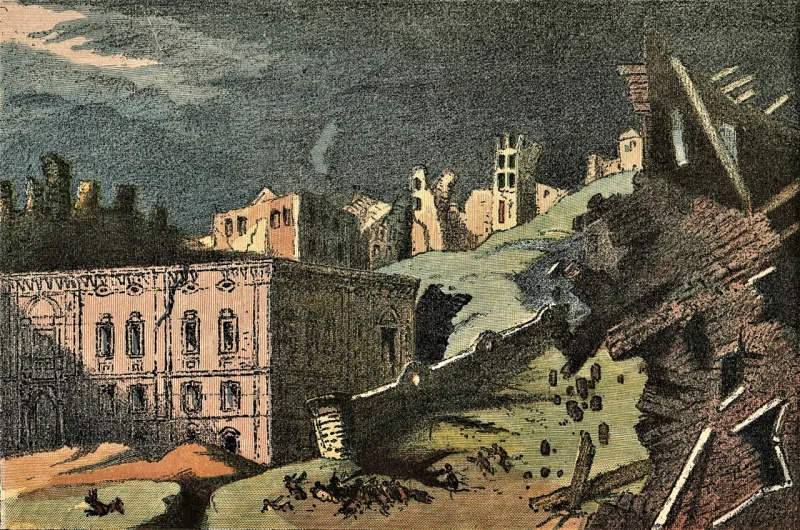
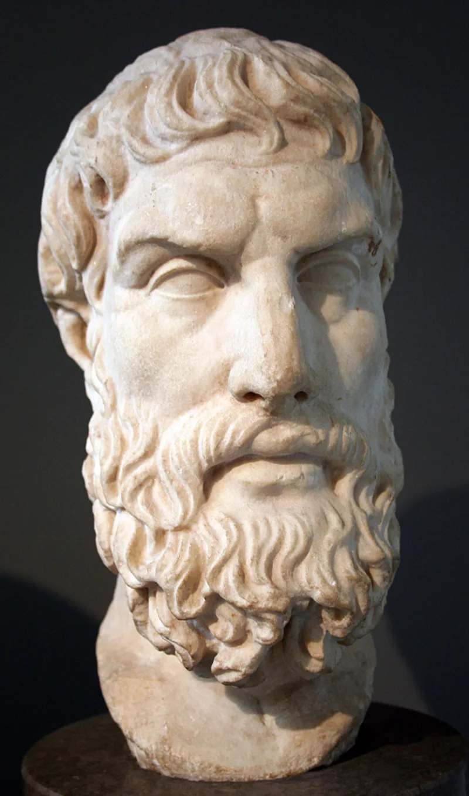

Serious philosophers argue this both ways. Say so before your friend does.
William Rowe's example is a fawn. It burns slowly to death in a forest fire no person ever hears about.
What greater good does that serve? Paul Draper adds a comparison.
The actual spread of pain and pleasure looks like what a blind biology predicts, not like what a loving Father predicts. And for many who have left the faith, this is not philosophy at all.
It is an autopsy. A child's grave.
A prayer answered with years of silence.
The logical form says suffering and a good, all-powerful God cannot both be true. That form is widely regarded as answered.
The atheist thinker J. L.
Mackie conceded it in print. He granted that Alvin Plantinga's free-will defence shows "the problem of evil does not, after all, show that the central doctrines of theism are logically inconsistent." The evidential form is a different animal.
It says the sheer scale of suffering counts as evidence against God. That form is live, serious and hard.
Skeptical theism saves God at the price of doubting everything. If we cannot judge the fawn's pain pointless, we cannot judge anything God commands as good either.
Free will has nothing to say about earthquakes, parasites, or 500 million years of animal pain before any human chose anything. Soul-making, which John Hick argued for, fails where suffering destroys a soul instead of building one.
Childhood dementia. The fawn, which has no soul to make.
Draper's comparison stands un-answered rather than answered. And the cross may console.
It does not explain.
Contested. Anyone who grades it answered has not felt it.
The logical form is resolved, with Mackie's concession on the page. The evidential form is an open wound.
Free will, soul-making, the last day and the cross reduce its force. They do not remove it.
What Christianity offers is not a tidy theory but a God with wounds. Job got a presence, not an explanation (Job 38:1-7).
With a suffering person, arguments are the wrong tool. Job's friends were at their best in the seven silent days.
This case is for the whiteboard. Never for the hospital room.
"I'm not going to hand you a reason. I don't have one that would be worth your time."


The cross may console, but it does not explain the fawn dying alone.
Rowe and Draper, pressed properly, answer back. Skeptical theism saves God at the price of doubting everything. If we cannot judge the fawn's suffering pointless, we cannot judge anything God commands as good either. Moral knowledge then collapses.
Free will has nothing to say about earthquakes, or parasites, or the 500 million years of animal pain before any human choice. Soul-making fails where suffering destroys souls rather than builds them. Childhood dementia. The fawn, which has no soul to make.
Draper's point stands un-answered rather than answered. If the universe is indifferent, the role pain plays in biology is just what you would expect. Under theism it needs extra guesses, stacked one on another. The cross may console. It does not explain.
Contested — anyone who grades this answered has not felt it.
Contested — anyone who grades this 'answered' has not felt it. The honest position is that the logical problem is resolved, with Mackie's concession in print, while the evidential problem is a genuine open wound.
Christianity's resources — free will, soul-making, the last day, the cross — reduce its force. They do not remove it.
There is a pastoral rule here, and it is not negotiable. With a suffering person, arguments are the wrong tool, and Job's friends were at their best in the seven silent days. This entry is for the whiteboard, never the hospital room.